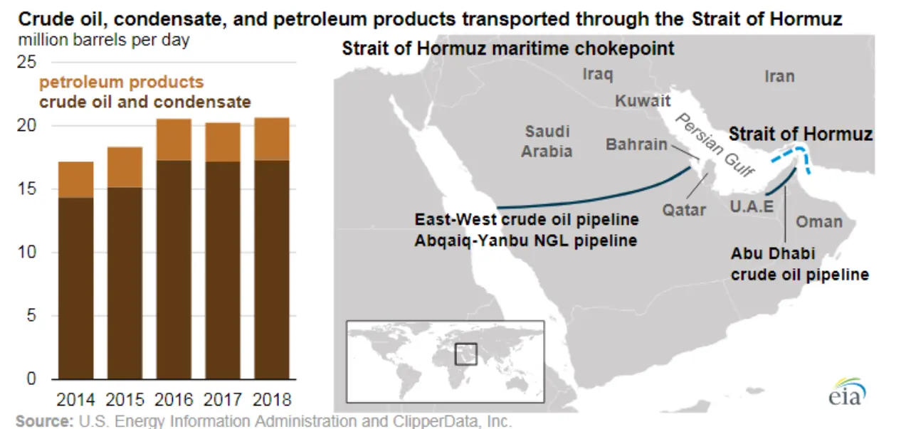

국제유가가 오르면 에너지주만 보면 된다고 생각하기 쉽습니다. 하지만 주식시장 전체에는 물가와 금리 경로가 더 크게 작동합니다. 유가는 운송비, 전기요금, 화학 원료, 소비자 심리에 동시에 들어가고, 중앙은행은 물가가 다시 끈적해지는지 확인합니다.
에너지 가격은 기업 실적표의 여러 줄에 흩어져 있습니다. 항공사는 연료비, 화학사는 나프타, 유통사는 물류비, 제조업은 전력비를 봐야 합니다. 같은 유가 상승도 가격 전가력이 강한 기업에는 버틸 수 있는 비용이고, 전가력이 약한 기업에는 마진을 깎는 비용입니다.
투자자가 볼 핵심은 유가 자체의 방향보다 유가가 인플레이션 기대와 금리 인하 시점을 밀어내는지입니다. 유가가 높아도 수요가 강해서 오른 것인지, 공급 충격 때문에 오른 것인지에 따라 주식시장의 반응은 달라집니다.
공급 충격은 할인율을 높입니다

지정학 위험으로 유가가 오르면 기업 이익보다 물가 우려가 먼저 커집니다.
중앙은행은 에너지 가격이 기대물가로 번지는지 확인하려고 금리 인하에 조심스러워집니다.
이때 성장주는 실적 뉴스가 좋아도 높은 할인율을 피하기 어렵습니다.
이 대목에서는 숫자 하나를 따로 떼어 보지 않는 편이 좋습니다. 지정학 위험으로 유가가 오르면 기업 이익보다 물가 우려가 먼저 커집니다. 중앙은행은 에너지 가격이 기대물가로 번지는지 확인하려고 금리 인하에 조심스러워집니다. 이때 성장주는 실적 뉴스가 좋아도 높은 할인율을 피하기 어렵습니다. 이 흐름이 다음 분기에도 이어지는지 확인하면 뉴스의 크기와 실제 투자 가치 사이의 간격을 줄일 수 있습니다.
수요 상승은 업종을 가릅니다
관련 영상
국제유가와 물가 압력을 함께 보는 시장 해설
경기가 좋아서 유가가 오르면 산업재와 에너지 수요가 함께 개선될 수 있습니다.
하지만 소비재와 운송업은 비용 부담을 가격에 넘길 수 있는지가 갈림길입니다.
수요형 유가 상승은 위험 자산에 무조건 나쁘지 않지만 이익률 확인이 필요합니다.
이 대목에서는 숫자 하나를 따로 떼어 보지 않는 편이 좋습니다. 경기가 좋아서 유가가 오르면 산업재와 에너지 수요가 함께 개선될 수 있습니다. 하지만 소비재와 운송업은 비용 부담을 가격에 넘길 수 있는지가 갈림길입니다. 수요형 유가 상승은 위험 자산에 무조건 나쁘지 않지만 이익률 확인이 필요합니다. 이 흐름이 다음 분기에도 이어지는지 확인하면 뉴스의 크기와 실제 투자 가치 사이의 간격을 줄일 수 있습니다.
마진 방어력이 핵심입니다
항공과 해운은 연료비 헤지와 운임 전가력을 같이 봐야 합니다.
화학과 소재는 제품 가격 스프레드가 원료 상승을 따라가는지 확인해야 합니다.
정유사는 재고평가이익과 정제마진을 나눠야 일회성 이익을 과대평가하지 않습니다.
이 대목에서는 숫자 하나를 따로 떼어 보지 않는 편이 좋습니다. 항공과 해운은 연료비 헤지와 운임 전가력을 같이 봐야 합니다. 화학과 소재는 제품 가격 스프레드가 원료 상승을 따라가는지 확인해야 합니다. 정유사는 재고평가이익과 정제마진을 나눠야 일회성 이익을 과대평가하지 않습니다. 이 흐름이 다음 분기에도 이어지는지 확인하면 뉴스의 크기와 실제 투자 가치 사이의 간격을 줄일 수 있습니다.
소비 여력도 흔들립니다
휘발유와 전기요금 부담은 가계의 선택 소비를 줄일 수 있습니다.
소매와 여행 업종은 매출보다 객단가와 방문 빈도를 함께 봐야 합니다.
에너지 비용이 길게 머물면 고소득층과 저소득층 소비 격차도 커집니다.
소비 여력도 흔들립니다을 볼 때는 숫자 하나를 따로 떼어 보지 않는 편이 좋습니다. 휘발유와 전기요금 부담은 가계의 선택 소비를 줄일 수 있습니다. 소매와 여행 업종은 매출보다 객단가와 방문 빈도를 함께 봐야 합니다. 에너지 비용이 길게 머물면 고소득층과 저소득층 소비 격차도 커집니다. 이 흐름이 다음 분기에도 이어지는지 확인하면 뉴스의 크기와 실제 투자 가치 사이의 간격을 줄일 수 있습니다.
투자 판단은 세 갈래입니다
유가 상승 원인이 공급인지 수요인지 먼저 나눕니다.
그 다음 물가 기대와 장기금리 반응을 확인합니다.
마지막으로 보유 업종의 비용 전가력과 재고 효과를 분리해 봅니다.
이 대목에서는 숫자 하나를 따로 떼어 보지 않는 편이 좋습니다. 유가 상승 원인이 공급인지 수요인지 먼저 나눕니다. 그 다음 물가 기대와 장기금리 반응을 확인합니다. 마지막으로 보유 업종의 비용 전가력과 재고 효과를 분리해 봅니다. 이 흐름이 다음 분기에도 이어지는지 확인하면 뉴스의 크기와 실제 투자 가치 사이의 간격을 줄일 수 있습니다.
유가는 한 업종의 가격표가 아니라 시장 전체의 비용표입니다. 에너지 기업에는 실적 기회가 될 수 있지만, 다른 기업에는 마진 압박이 되고 중앙은행에는 금리 경로를 늦추는 이유가 됩니다. 그래서 유가 뉴스는 섹터 순환보다 할인율 점검으로 먼저 읽는 편이 좋습니다.
좋은 대응은 예측이 아니라 분류입니다. 공급 충격인지 수요 회복인지, 물가 기대가 움직이는지, 기업이 비용을 가격에 넘길 수 있는지, 재고 효과가 일회성인지 확인해야 합니다. 이 네 가지를 나누면 유가 급등 뉴스 속에서도 투자 판단이 훨씬 차분해집니다.
시장 지표는 하루 단위로 크게 흔들리지만 포트폴리오 결정은 더 느리게 내려야 합니다. 금리, 환율, 원자재, 신용스프레드가 같은 방향으로 움직이는지 확인하고, 한 지표만 튄 날에는 추격 매매보다 보유 비중과 환 노출을 점검하는 편이 실전적입니다.
특히 한국 투자자는 원화 기준 성과를 함께 봐야 합니다. 해외 자산이 올라도 환율이 반대로 움직이면 체감 수익이 줄 수 있고, 국내 주식이 싸 보여도 외국인 환헤지 비용이 높으면 수급 회복이 늦어질 수 있습니다.
마지막으로 전통 에너지 글을 읽을 때는 가격이 먼저 움직인 뒤 이유가 붙는 경우가 많다는 점을 기억해야 합니다. 투자자는 결론을 서둘러 정하기보다 공식 자료, 최근 실적, 현금흐름, 밸류에이션, 시장 기대가 서로 같은 방향인지 차분히 확인하는 편이 좋습니다.
시장 지표는 하루 단위로 크게 흔들리지만 포트폴리오 결정은 더 느리게 내려야 합니다. 금리, 환율, 원자재, 신용스프레드가 같은 방향으로 움직이는지 확인하고, 한 지표만 튄 날에는 추격 매매보다 보유 비중과 환 노출을 점검하는 편이 실전적입니다.
특히 한국 투자자는 원화 기준 성과를 함께 봐야 합니다. 해외 자산이 올라도 환율이 반대로 움직이면 체감 수익이 줄 수 있고, 국내 주식이 싸 보여도 외국인 환헤지 비용이 높으면 수급 회복이 늦어질 수 있습니다.
마지막으로 투자 글을 읽을 때는 가격이 먼저 움직인 뒤 이유가 붙는 경우가 많다는 점을 기억해야 합니다. 투자자는 결론을 서둘러 정하기보다 공식 자료, 최근 실적, 현금흐름, 밸류에이션, 시장 기대가 서로 같은 방향인지 차분히 확인하는 편이 좋습니다.
이 글의 목적은 정답을 대신 내려 주는 것이 아니라 확인 순서를 줄이는 데 있습니다. 관심 종목이나 상품이 있다면 같은 기준을 표로 옮겨 적고, 다음 실적 발표 때 실제 숫자가 어떻게 변했는지 다시 비교해 보는 방식이 가장 안전합니다.
실전 점검에서는 지표의 방향보다 조합을 먼저 봐야 합니다. 금리만 오르는지, 달러와 원자재와 신용스프레드가 함께 움직이는지에 따라 포트폴리오 대응은 달라집니다. 한 지표가 튄 날에는 결론을 빨리 내리지 말고 다른 지표가 같은 이야기를 하는지 확인하는 편이 좋습니다.
또한 시장 변수 점검은 매매 신호가 아니라 위험 노출을 조정하는 자료로 쓰는 것이 안전합니다. 보유 종목의 업종, 통화, 금리 민감도, 원자재 비용 노출을 표로 적어 두면 뉴스가 나올 때 어떤 자산이 먼저 흔들릴지 더 빨리 알 수 있습니다.
마지막 확인은 시간입니다. 하루 변동은 감정의 영역에 가깝고, 몇 주 동안 이어지는 흐름은 자금 배분의 영역에 가깝습니다. 같은 방향의 변화가 반복될 때만 비중 조정의 근거로 삼는 편이 실수를 줄여 줍니다.
또 하나 중요한 점은 기록입니다. 관심 있는 종목이나 상품을 볼 때 오늘의 판단 근거를 짧게 남겨 두면 다음 실적 발표나 시장 변화가 왔을 때 생각이 어떻게 달라졌는지 확인할 수 있습니다. 이 기록은 매수와 매도보다 먼저 투자 습관을 안정시키며, 같은 실수를 반복하지 않게 도와줍니다.
작은 차이를 확인하는 습관이 쌓이면 같은 뉴스에서도 더 침착하게 판단할 수 있습니다.